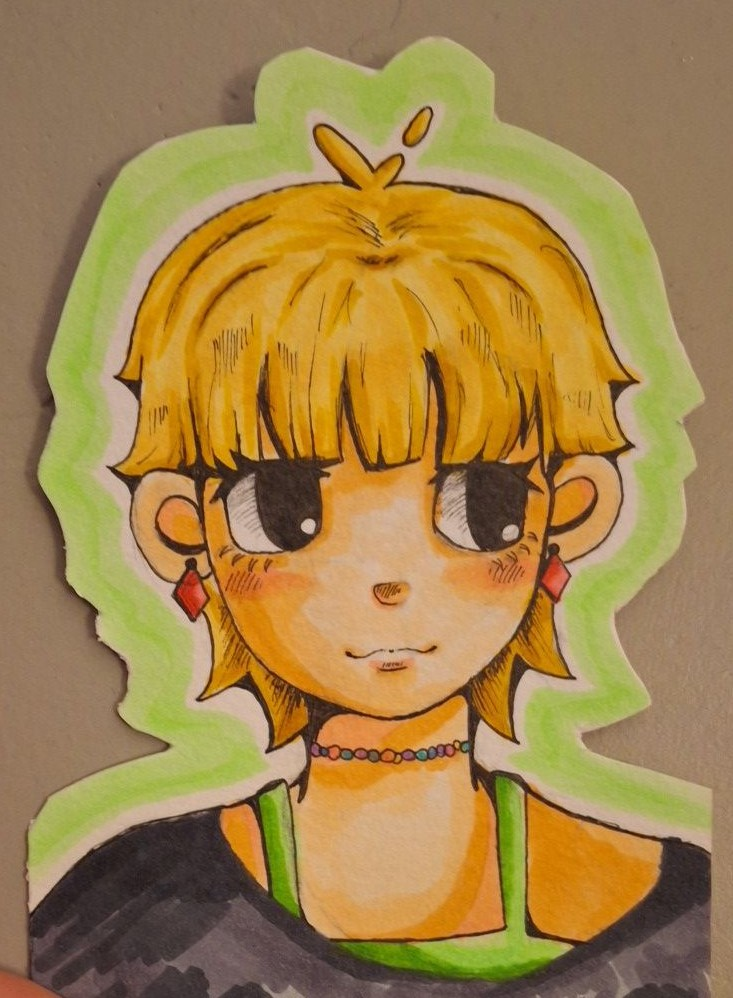
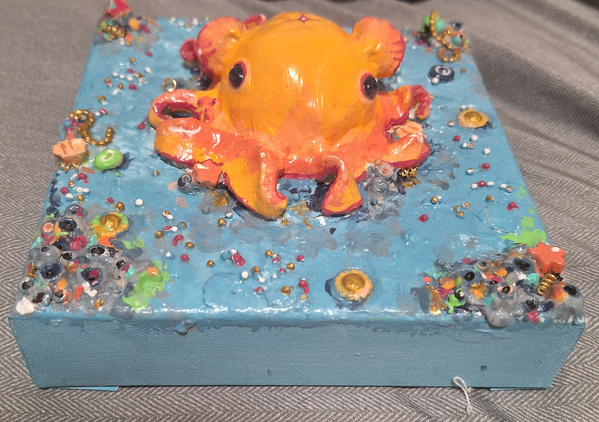

Hi, I'm Eva! I create art under the alias Cheese. I'm a budding artist that experiments in all different art mediums. I have been experimenting and creating for around 10 years, trying different styles to see what fits for me. It's been a fun process so far, and is super rewarding! The creative process is something that helps me relax, and I want others to be able to find that for themselves.
 If you are interested in art, but don't know what your style is yet, I encourage you to just get creating! It took me years to figure out what my style was. I hope that by sharing my art, I can help inspire others to pick up a pen, brush, or block of clay, and just try your hand at it. You'll never know what you're missing out on if you don't try it out first!